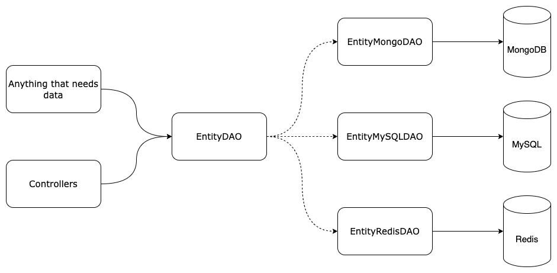

Repositories¶
The repositories package gathers the entities that are responsible for interacting with data sources.
These entities are called DAO (Data Access Object). They are a high-level abstraction of one or more specific data sources.
The abstraction of the target data source allows the caller (generally a controller) to be fully unbound from
a data source implementation. This permits high flexibility and extensibility.
Understanding DAO¶
A DAO is not an abstraction of a data source; it is defined to retrieve an entity. Different
implementations will then retrieve the needed data using data source connectors.
Here is a scheme that explains it:

For example, if our API needs to manipulate a Car object, we would define a ICarDAO that is the
abstraction, and we would implement a MySQLCarDAO as the implementation of ICarDAO to manipulate
a Car object stored in a MySQL database.
Working with DAO¶
To create a working DAO, we need a few things:
- Defining the DAO interface.
- Creating one or more implementation(s) for a specific data source.
Defining the DAO interface¶
Components¶
DAO Interface
The <Entity>DAO interface serves as a contract for managing data access operations related to a specific model. The interface declares operations on model entities. Implementations of this interface should provide functionality tailored to the characteristics of the specific model.
ProxyFactory<Entity>DAO
The ProxyFactory<Entity>DAO function acts as a proxy for creating and retrieving IFactory<Entity>DAO function. The newly created I<Entity>DAO instance is then saved in the registry for future use.
Factory<Entity>DAO
The Factory<Entity>DAO function is responsible for creating a new I<Entity>DAO instance based on the provided DAOFactoryOptions. It uses a switch statement to determine the DAO type and calls the corresponding factory function for that type. If the specified DAO type is not recognized, it returns a DAOTypeNotFoundError. The created I<Entity>DAO instance is returned if successful.
See configuring the API for more details.
Example¶
Here is an example for an IFrogDAO:
package repositories
import (
"context"
"fmt"
model "github.com/Aloe-Corporation/frog-api/pkg/structs"
)
// mapFrogDAO is used by ProxyFactoryFrogDAO to store FrogDAO.
var mapFrogDAO = make(map[string]map[string]IFrogDAO)
// IFrogDAO is a DAO interface to manage Frog.
type IFrogDAO interface {
ReadByUUID(ctx context.Context) (*model.Frog, error)
}
// ProxyFactoryFrogDAO uses FactoryFrogDAO if the FrogDAO don't exist, and returns FrogDAO.
func ProxyFactoryFrogDAO(opt DAOFactoryOptions) (IFrogDAO, error) {
// Test if exist
mapConnector, mapExist := mapFrogDAO[opt.Type]
if mapExist {
daoFrog, present := mapConnector[opt.Connector]
if present {
return daoFrog, nil
}
}
// Build new FrogDAO
daoFrog, err := FactoryFrogDAO(opt)
if err != nil {
return nil, fmt.Errorf("fail to build new FrogDAO: %w", err)
}
// Save new FrogDAO
if !mapExist {
mapFrogDAO[opt.Type] = make(map[string]IFrogDAO)
}
mapFrogDAO[opt.Type][opt.Connector] = daoFrog
return daoFrog, nil
}
// FactoryFrogDAO builds a new FrogDAO according to the typename.
func FactoryFrogDAO(opt DAOFactoryOptions) (IFrogDAO, error) {
var dao IFrogDAO
var err error
switch opt.Type {
case TypeFrogMongoDAO:
dao, err = factoryFrogMongoDAO(opt)
default:
return nil, &DAOTypeNotFoundError{Type: opt.Type}
}
if err != nil {
return nil, fmt.Errorf("fail to build %v: %w", opt.Type, err)
}
return dao, nil
}
Defining DAO implementations¶
Components¶
DAO identifier
Each DAO implementation must define an identifier to identify the implementation. This identifier will be used to instantiate the DAO in the call of the DAO interface proxy factory during API initialization.
DAO implementation structure
The implementation of the DAO is represented as a struct that holds a connector to the data source.
The connector is defined in the connectors package. Every connectors are defined in the connectors package to lighten the repositories code and to improve modularity.
The implementation must contain a connectorName field to identify the correct connector when initializing the DAO.
DAO methods
The implementation must implement all the methods defined by the DAO interface to respect the contract.
The implementation can also contain additional private methods to facilitate some processes.
Private factory
Each implementation must define a private factory that will be called by its corresponding DAO interface proxy factory.
See configuring the API for more details.
Example¶
Here is an example with a FrogMongoDAO that implements the IFrogDAO:
package repositories
import (
"context"
"fmt"
"github.com/Aloe-Corporation/frog-api/internal/connectors"
model "github.com/Aloe-Corporation/frog-api/pkg/structs"
"github.com/Aloe-Corporation/mongodb"
"github.com/google/uuid"
)
const (
// TypeFrogMongoDAO is an identifier to build FrogMongoDAO.
TypeFrogMongoDAO = "FrogMongoDAO"
)
var _ IFrogDAO = (*FrogMongoDAO)(nil)
// FrogMongoDAO is a FrogDAO with MySQL connector.
type FrogMongoDAO struct {
connector *mongodb.Connector
connectorName string
}
func (dao *FrogMongoDAO) ReadByUUID(ctx context.Context) (*model.Frog, error) {
// mongo db specific code
return nil, nil
}
// factoryFrogMongoDAO build FrogMongoDAO.
func factoryFrogMongoDAO(opt DAOFactoryOptions) (*FrogMongoDAO, error) {
connector, err := connectors.GetConnectorMongo(opt.Connector)
if err != nil {
return nil, fmt.Errorf("fail to get connector: %w", err)
}
return &FrogMongoDAO{
connector: connector,
connectorName: opt.Connector,
}, nil
}